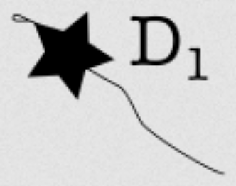
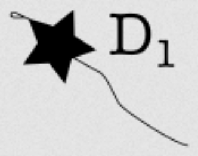

18 Figures (images, diagrams, graphs)
Figures are images, diagrams, graphs and the like. They can be inline or floated or annexed.
- inline: the figure needs to be at a precise point in the text. E.g. “As can be seen in the image below:”, followed by the image, followed by “a triangle can be split into two right triangles”.
- floated: the figure needs to be around a certain point in the text. It can be moved above, below, to the next or previous page, for better appearance. On a webpage, it can shown on the side of the text. Floated images
- annexed: the figure is placed at the end of the article. On a webpage, it can be shown on the side of the text.
Figures can be provided in two ways:
- Separate files.
- Code in markdown or Rmarkdown that generates the figure (particularly good for graphs).
At the moment the Dialectica house template only handles figures as files, so we’ll ignore the code option.
18.1 Inserting figures as files
Basic syntax:
{... attributes ..}Where:
file.svgis the source filecaptionis the text that will appear as the image’s caption if the image is treated as a floated.
As can be seen in the image below:
![]
", followed by the image, followed
by "a triangle can be split into two right triangles18.2 Prefer vector formats for figures
Diagrams, figures and the like should be provided in vector graphics formats (SVG files or code or TikZ code in LaTeX). Only photos, hand-drawn illustrations and the like should be provided as bitmap (a.k.a. raster) files. If you’re not familiar with the difference, see the explanation below.
If an author provides a diagram in bitmap form we ask that they recreated it in a vector format. Inkscape is an open-source, free software to generate vector images that is fairly easy to use and powerful. Authors who write in LaTeX may try to create in using the TikZ package instead.
18.3 Background on vector vs bitmap formats
(Skip this section if you are familiar with the distinction).
What’s the difference between vector and bitmap image files? Bitmap (a.k.a. raster) images are encoded as a grid of pixels. Vector images are encoded as mathematical descriptions of lines and curves. For instance, a vector image may be (the computer-language equivalent of) “draw a circle of radius 10mm around the coordi nate (0,0).” The bitmap equivalent would be a big grid with cells coloured to form a circle. Because of this, vector images scale perfectly and magnify perfectly. Bitmap images can get noisy and pixelated when scaled or magnified. See below if you can tell which is which:
 

As you can see, the vector (first one) looks smooth when magnified, the bitmap looks pixelated.
Why use vector images for diagrams? They’re much better quality and use much less space. A bitmap diagram easily looks pixelated in print or on a high-resolution screen; it’ll look unprofessional to the reader. Bitmaps in high resolution can look good even in print or when enlarged on a screen, but at the cost of using a lot of space: a 1920*1080 high resolution bitmap easily takes about 1000 times the space of vector version of the same diagram; an article with bitmap images can easily occupy the same space as 10 to 100 articles without. It’s only in the case of highly textured images (e.g. photos) that a vector version would be either impossible or much heavier than a bitmap.
Which file types are vector, which are bitmap?
- JPEG, JPG, PNG, TIFF: bitmap images.
- PDF: can be bitmap, vector, and even images combining the two. The only way to tell is to zoom in a lot and see whether the lines remain perfect (vector) or pixelate (bitmap). File size is also an indicator: vectors are hardly more than a few Kbs, bitmaps can be anything from a few Kbs to one Mb or so.
- SVG: vector. Exception: an SVG file can import bitmaps from other files, including by URL. So in principle an author could send you a SVG ‘conversion’ that is nothing else than a link to an online version of their image. You’re very unlikely to encounter that problem, but if in doubt: the SVG file is a text file, you can open it in a text editor. Look for the tag
<image, e.g.<image href="mybitmap.pgn" width="200px"/>.
How to convert a bitmap image to a vector image? It can’t really be done. The problem is that the computer has to guess from the pixel grid of a bitmap image what’s supposed to be a line, a curve, etc. and that requires some intelligence (think of it like this: we’re going from a limited resolution to infinite precision). This is called vectorizing the bitmap image. Software like Inkscape can try and vectorize images for you, but you have to fiddle with the settings for each specific image, and the results are rarely satisfactory. In most cases, your or the author will have a much easier time recreating the image in vector mode. If you want to try to vectorize anyway, search “vectorize an image in Inkscape” or “convert an image to SVG” online to find some tutorials.
18.4 How to create a vector image?
How to create a vector image? Draw it in an editor, or code it in TikZ.
- Drawing in a vector graphics editor. Wikipedia has a [list of visual graphics editor]. Fully-featured editors will cover all needs but may require more work. Inkscape is the best open-source one; Adobe Illustrator a good propertary one. However for simple diagrams you may be able to get by with a quick-and-dirty online editor. There are quite a few of those; try
online svg editorin a search engine (check whether you need to pay to save your file). At the moment
DrawSVG seems good (easy to use, free and no registration, ads).
TikZ diagrams. TikZ is a language to describe vector images that can be embedded in LaTeX. It’s powerful but has a very steep learning curve. If authors can provide them, TikZ diagrams are the best - because any text in those diagrams will be printed out in the journal’s own fonts. TikZ code can be included directly in the markdown. Our template will include them directly in the LaTeX/PDF output and convert them to SVG files for other output formats.
How to create a TikZ diagram? Typically the author needs to go through the (large) TikZ documentation and work from existing examples. But there is also an online visual editor (TikZit) that can help.
18.5 How to modify a bitmap image
Wikipedia has a list of bitmap image editors. GIMP is the best open-source editor. Adobe Photoshop and Photoshop Elements is a good commercial one, photography-oriented.
18.6 Figures with letters or text
Figures often include letters or text. They look best if their fonts are consistent throughout your journal. It is desirable, but not mandatory, your house template fonts. If these can be freely distributed you could ask authors to install them and use them, but that’s a tall order. It’ll typically fall on you to apply house fonts if possible.
- Figures in TikZ code: automatic. TikZ specifies the text, not the fonts, so your house template will render the figures with your house fonts.
- Figures in SVG. Use a good editor like Inkscape with the house fonts installed on your computer. Open the file, select text elements, change their font. It should be quick. Exception: in some rare cases, the original files may have encoded the characters as complicated lines rather than characters proper; if so the editor won’t recognize them as text and change their font. If so your only option would be to remove the original text and recreate it: it is probably more time-costly than it’s worth.
- Figures in bitmap format: can’t realistically be done. Editing in a bitmap editor is possible but probably more time-costly than it’s worth. If you’re settling for a bitmap you’re already tolerating low quality anyway.
18.7 Resizing SVG files
If the author provides you with a SVG file that has too much whitespace around, resize it using Inkscape.
- open the file in Inkscape
- select all the content with the arrow tool (click on the top left, drag your mouse to form a rectangle around it). Note: you could try Edit > Select all (Ctrl+A on Win, Cmd+A on MacOS) but this sometimes take the entire page, even if it has a lot of whitespace.
- Go to File > Document Properties. In the “Custom Size” area, expand the “Resize page to content…” line.
- Make sure “Units” is “px” (pixels). Enter 20 (20.00000) margins everywhere. If you activate the lock icon, you only need to enter 20 in one of the margins and the others will be the same.
- Click “Resize page to drawing or selection”. You should see that the page limits are just around the drawing.
- Close the “Document properties” box and save the document.
18.8 Including SVG image files in markdown
If you insert an SVG image file in markdown and generate a PDF output, Pandoc needs to convert it to a format that LaTeX understands. It does so using an external programme, rsvg-convert. If rsvg-convert is not present, you will get a warning: [WARNING] Could not convert image...: check that rsvg-convert is in path.
Solutions
- Convert the SVG files to PDF using Inkscape. They will still be vector file and print out well, but the LaTeX engine that generates your PDF output will be able to insert them. Open the file(s) in Inkscape, go to File > Save a copy, select the “Portable Document Format (pdf)” format, save. In your markdown code replace
ImageFile.svgwithImageFile.pdf. - Install
rsvg-convert. As far as we can tell the least difficult way to do this is to use package managers. On Linux look for rsvg-convert in your package manager. On MacOS you should installhomebrewfirst, if you haven’t already, and run the commandbrew install rsvg-convert. On Win you should install thechocolateypackage manager, open an administrator Powershell (Windows menu > Windows Powersheel > right click on Powershell and select “Run as Administrator”, give the permission) and run the commandchoco install rsvg-convert.
Note: on Windows Pandoc 2.14.0.3 (June 2021 version) cannot handle SVG conversion, even if rsvg-convert is installed. If that’s your setup use the first solution.